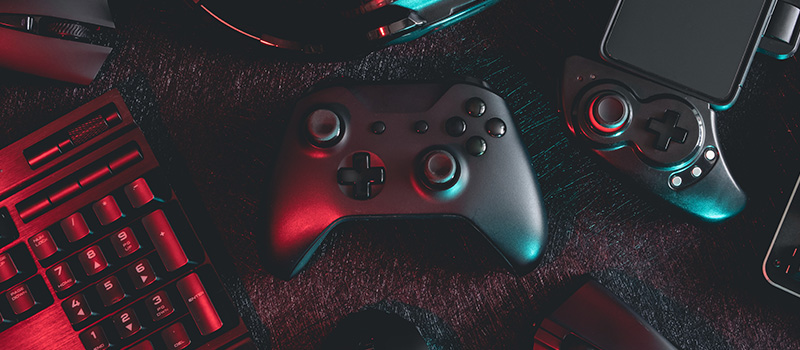
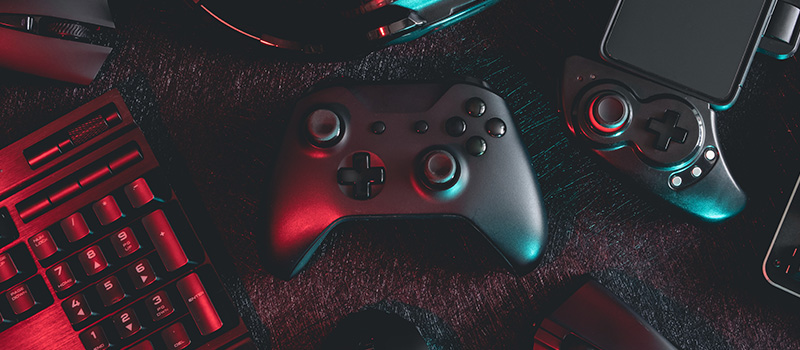

After my sophomore year, I interned at a tech startup, working on a smart home mobile app. This hands-on experience taught me the importance of clean, efficient code, and teamwork. My junior year brought a research assistant position focusing on AI and machine learning, where I helped develop a real-time chatbot. This sparked my interest in AI, leading me to take more specialized courses.
Outside of academics, I'm an avid gamer and enjoy building custom gaming PCs. I also contribute to open-source projects on GitHub. In my free time, I love playing with my dog, cooking, and hiking.

 
